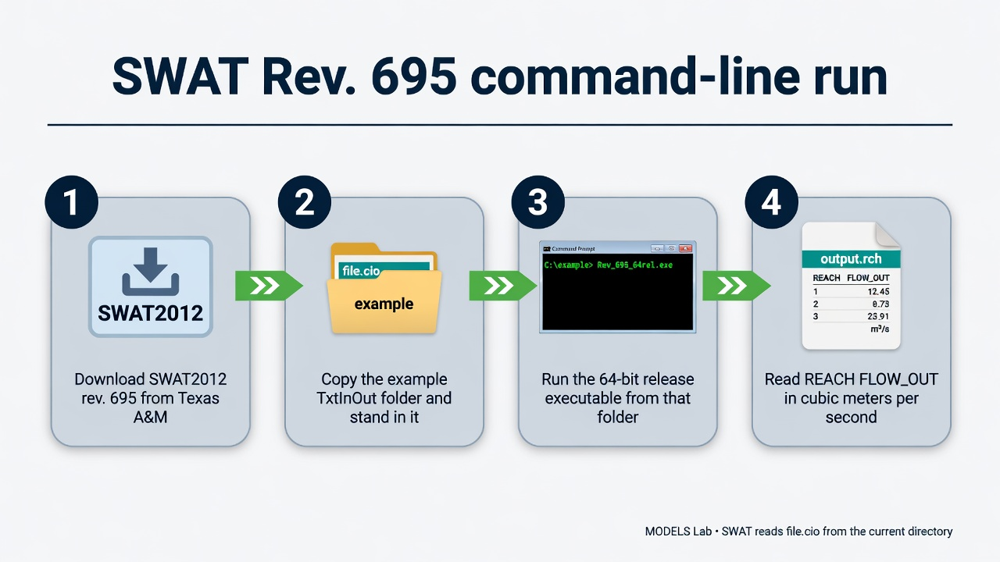
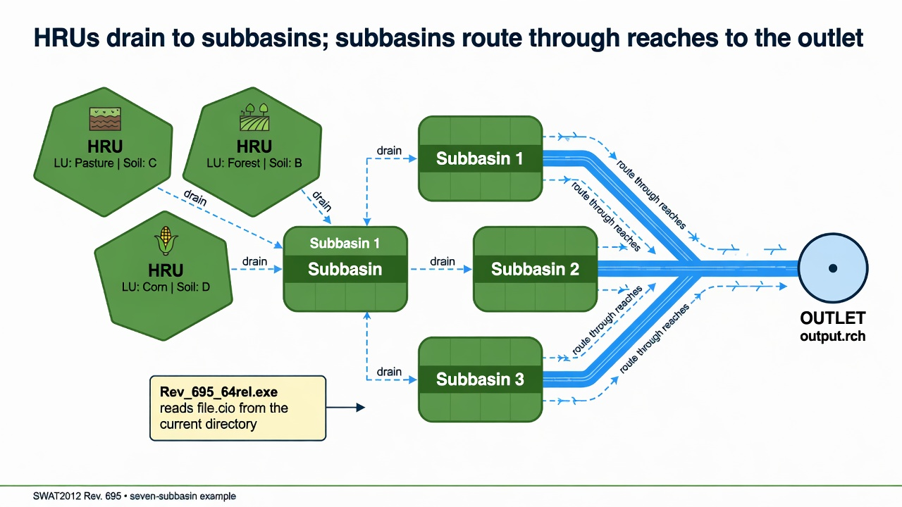
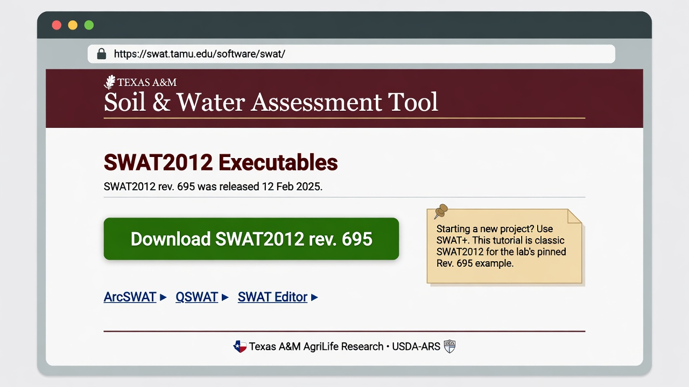

SWAT
A first successful run of classic SWAT2012, revision 695, on Windows. You download the Texas A&M executable, copy the lab’s example TxtInOut folder, run Rev_695_64rel.exe from that folder, and read FLOW_OUT in output.rch. SWAT+ is installed elsewhere on this host; this path is the 2012 engine.

file.cio from the current directory.1. What this model does
SWAT is a continuous, daily, watershed-scale water and water-quality model. Land is grouped into HRUs (unique land use, soil, and slope). HRUs drain to subbasins. Subbasins send water, sediment, and nutrients into reaches, and the reaches connect to an outlet. You will open the reach file first.

The lab’s pinned engine is Rev_695_64rel.exe (SWAT2012 Rev. 695, 64-bit, 12 Feb 2025). ArcSWAT, QSWAT, and SWAT Editor can build a new project; they are not required to finish this tutorial.
2. Get the software
Download SWAT2012 rev. 695 from Texas A&M AgriLife. The software page also hosts ArcSWAT, QSWAT, and SWAT Editor. New projects are steered toward SWAT+; keep 2012 when you are repeating an existing TxtInOut tree, which is this lab’s case.

archive\downloads\SWAT.zip.On this host the tree is already at C:\Grok\Models\installs\SWAT. If you are repeating the lab path, you can skip the download and use that folder.
3. The lab install
Classic SWAT is a folder of text files plus one executable. GIS is optional.
| Piece | Where | First-run role |
|---|---|---|
Rev_695_64rel.exe |
installs\SWAT\ and the example folder |
The 2012 engine. Copy it into the TxtInOut folder and run it there. |
file.cio |
example / TxtInOut | Master control. This example is 20 years starting 2001, two warmup years, daily print. |
fig.fig |
same folder | Watershed topology: seven subbasins and the reach routing. |
| HRU and weather files | *.hru, *.mgt, *.sol, pcp1.pcp, Tmp1.Tmp, *.wgn |
Required. Named by file.cio and fig.fig. |
| SWAT+ | installs\SWATplus\ |
A different model. Not this tutorial. |
installs\SWAT\golden holds a prior CLI tree. The verification below used a new working copy of the example inputs, so that golden tree stays untouched. tools\test_all_models.ps1 still runs in place under example; the tutorial wrapper below uses a disposable folder.
4. Novice path: run the seven-subbasin example
The example is a twenty-year continuous run (2001–2020) with two years skipped in the printed output. IPRINT is daily. You will copy the inputs into a fresh folder, drop the executable beside them, and run from that folder.
$src = "C:\Grok\Models\installs\SWAT\example"
$run = "C:\Grok\Models\installs\SWAT\tutorial_run_20260913"
New-Item -ItemType Directory -Force -Path $run | Out-Null
Get-ChildItem $src -File | Where-Object {
$_.Name -notlike "output.*" -and $_.Name -notlike "bmp-*" -and $_.Extension -notin ".out"
} | Copy-Item -Destination $run
Copy-Item "C:\Grok\Models\installs\SWAT\Rev_695_64rel.exe" $run -Force
Set-Location $run
.\Rev_695_64rel.exe
On this host you can instead rerun the lab wrapper, which copies those inputs, executes the engine, asserts the numbers below, and rewrites the figure:
python C:\Grok\Models\tools\run_swat_tutorial_verify.py
Stand in the folder that contains file.cio. The engine does not take a project path on the command line. If you run it from a tools directory, it will not see the example watershed.

5. Confirm the run
The console should end with Execution successfully completed. Then open output.rch. Reach 7 is the outlet.
| Check | Where | This verification (13 Sep 2026) |
|---|---|---|
| Console | run_stdout.txt |
Execution successfully completed (years 1–20) |
output.rch size |
run folder | 33.8 MB (daily print, 18 years × 7 reaches) |
| Outlet first-day FLOW_OUT | REACH 7, day 1 | 0.5102 cms |
| Outlet mean daily flow | REACH 7, 2003–2020 | 1.0875 cms |
| Outlet mean annual sediment | REACH 7 SED_OUT | 5,942 t/yr |
The automated test is test_tutorial_run inside tools\run_swat_tutorial_verify.py. It requires the success phrase, seven reaches, eighteen printed years, and REACH 7 first-day FLOW_OUT equal to 0.5102 cms within 0.0005. The older test_all_models.ps1 SWAT block still looks for a historic 0.2635E+01 token on the first data line of the standing example folder; use the wrapper above when you want a disposable copy of the current inputs.
6. This verification’s figure
The 13 Sep 2026 run wrote eighteen printed years after the two-year skip. Outlet mean daily flow is 1.09 cms; 2006 is the wet peak. Mean annual sediment at reach 7 is 5,942 t/yr, with 2006 the high year on the right-hand panel.

installs\SWAT\tutorial_run_20260913. Left: mean daily FLOW_OUT at reach 7. Right: annual SED_OUT at the same reach.If you rerun the wrapper after deleting output.rch in that folder, SWAT runs again and this PNG is rewritten in the run folder and in each tutorial images\ home.
7. After the first success
Once output.rch is written, you can open output.sub and output.hru the same way, or bring the reach file into SWAT Check. Building a new watershed is ArcSWAT or QSWAT plus SWAT Editor; that is a different lesson. This one stops at a verified CLI run of SWAT2012 Rev. 695.